Introduction
This package contains functions to run the Length-Based Spawning Potential Ratio (LBSPR) method. The LBSPR package can be used in two ways: 1) simulation using the LBSPR model and 2) fitting to empirical length data to provide an estimate of the spawning potential ratio (SPR).
The LBSPR method has been developed for data-limited fisheries, where few data are available other than a representative sample of the size structure of the vulnerable portion of the population (i.e., the catch) and an understanding of the life history of the species. The LBSPR method does not require knowledge of the natural mortality rate (M), but instead uses the ratio of natural mortality and the von Bertalanffy growth coefficient (K) (M/K), which is believed to vary less across stocks and species than M (Prince et al. 2015).
Like any assessment method, the LBSPR model relies on a number of simplifying assumptions. In particular, the LBSPR models are equilibrium based, and assume that the length composition data is representative of the exploited population at steady state. See the publicaitons listed in the reference list for full details of the assumptions of the model, including simulation testing to evauate the effect of violations of these assumptions.
Please make sure that you understand the assumptions of the model before using the LBSPR package on your data.
There are two versions of the LBSPR model included in this package.
Age-Structured Length-Based Model
The LBSPR model described by Hordyk et al. (2015a, b), and tested in a MSE framework (Hordyk et al. 2015c), use a conventional age-structured equilibrium population model. An inherent assumption of this model structure is that selectivity is age-based not length-based.
Length-Structured Growth-Type-Group Model
Hordyk et al. (2016) describe a length-structured version of the LBSPR model that uses growth-type-groups (GTG) to account for size-based selectivity. The GTG-LBSPR model also has the ability to include variable M at size (by default M is assumed to be constant). The GTG-LBSPR model typically estimates a lower fishing mortality rate for a given size structure compared to the earlier age-structured model. This is because the age-structured model has a ‘regeneration assumption’, where, because of the age-based selectivity assumption, large individuals are expected even at high fishing mortality (large, young fish).
The default setting for the LBSPR package is to use the GTG-LBSPR model for all simulation and estimation. Control options in the simulation and estimation functions can be used to switch to the age-structured LBSPR model.
Bug Reports
The LBSPR package is still in development. It is possible, even highly likely, that there are bugs and issues with some of the functions. Please alert me to any bugs or issues by using (GitHub)[https://github.com/AdrianHordyk/LBSPR/issues].
Comments and suggestions for additional features are welcome. (GitHub pull requests)[https://github.com/AdrianHordyk/LBSPR/pulls] with modifications or extensions are even more welcome!
Finally, please make sure you understand the data and the biological parameters (and how the model treats these) and critically evaluate any output of the LBSPR model. As they say:
All Care Taken But We Accept No Responsibility
First Steps
Simulation
The LBSPR package can be used to generate the expected size composition, the SPR, and relative yield for a given set of biological and exploitation pattern parameters.
LB_pars Object
The first thing to do is to create a LB_pars object that contains all of the required parameters for the simulation model. LB_pars is an S4 class object.
The S4 system is different to the S3 system that is commonly used in R, and that R users are familiar with. Don’t worry if you’ve never used S4 objects before. The main thing to know is that elements in a S4 object are called slots and you access them using the @ symbol (rather than the $ symbol that is used with data.frames).
You can read more about S4 objects here.
Create a new LB_pars Object
To create a new LB_pars object you use the new function:
MyPars <- new("LB_pars")## A blank LB_pars object created## Default values have been set for some parametersYou can see the elements or slots of the LB_pars object using the slotNames function:
slotNames(MyPars)## [1] "Species" "MK" "Linf" "CVLinf" "L50"
## [6] "L95" "Walpha" "Wbeta" "FecB" "Steepness"
## [11] "Mpow" "R0" "SL50" "SL95" "FM"
## [16] "SPR" "BinMin" "BinMax" "BinWidth"MyPars is an object of class LB_pars. You can access the help file for classes by using the ? symbol (similar to how you find the help file for functions):
class?CLASSNAME
class?LB_pars Populate the LB_pars Object
The LB_pars object has 19 slots. However, not all parameters need to be specified for the simulation model.
Some parameters are essential, and a warning message should appear if you attempt to progress without values (please let me know if there are issues).
Default values will be used for some of the other parameters if no value is specified. For example, the first slot (Species) is a character object that can be used for the species name. If this slot is left empty, the simulation model will populate it with a default value.
A message should alert you any time a default value is being used. Again, please let me know if you find something strange going on.
The minimum parameters that are needed for the simulation model are:
Biology
- von Bertalanffy asymptotic length (
Linf) - M/K ratio (natural mortality divided by von Bertalanffy K coefficient) (
MK) - Length at 50% maturity (
L50) - Length at 95% maturity (
L95)
Exploitation - Length at 50% selectivity (SL50) - Length at 95% selectivity (SL95) - F/M ratio (FM) or SPR (SPR). If you specify both, the F/M value will be ignored.
Size Classes - Width of the length classes (BinWidth)
Remember, you can find the help documentation for the LB_pars object by typing: class?LB_pars in the console.
To create an example parameter object:
MyPars@Linf <- 100
MyPars@L50 <- 66
MyPars@L95 <- 70
MyPars@MK <- 1.5
MyPars@SL50 <- 50
MyPars@SL95 <- 65
MyPars@SPR <- 0.4
MyPars@BinWidth <- 5Running the Simulation Model
Now we are ready to run the LBSPR simulation model. To do this we use the LBSPRsim function:
MySim <- LBSPRsim(MyPars)## No species name provided - using a default## BinMax not set. Using default of 1.3 Linf## BinMin not set. Using default value of 0You will notice some messages in the console alerting you that default values have been used. You can change these by specifying values in MyPars and re-running the LBSPRsim function.
We’ll manually set those values here so we don’t keep seeing the messages throughout the vignette.
MyPars@Species <- "MySpecies"
MyPars@BinMax <- 150
MyPars@BinMin <- 0 The LB_obj Object
The output of the LBSPRsim function is an object of class LB_obj. This is another S4 object, and contains all of the information from the LB_pars object and the output of the LBSPRsim function.
Many of the functions in the LBSPR package return an object of class LB_obj. You should not modify the LB_obj object directly. Rather, make changes to the LB_pars object (MyPars) in this case, and re-run the simulation model (or other functions, covered later in the vignette).
Simulation Output
Let’s take a look at some of the simulated output.
MySim@SPR ## [1] 0.3999961Ignoring a small amount of rounding error, the simulated SPR is the same as our input value (MyPars@SPR).
What is the ratio of fishing mortality to natural mortality in this scenario?
MySim@FM ## [1] 0.6473832It is important to note that the F/M ratio reported in the LBSPR model refers to the apical F over the adult natural mortality rate. That is, the value for fishing mortality refers to the highest level of F experienced by any single size class.
If the selectivity pattern excludes all but the largest individuals from being exploited, it is possible to have a very high F/M ratio in a sustainable fishery (high SPR).
A couple of more simulations with alternative values:
Specify F/M instead of SPR:
MyPars@SPR <- numeric() # remove value for SPR
MyPars@FM <- 1 # set value for FM
MySim <- LBSPRsim(MyPars)
MySim@SPR # SPR at F/M = 1 ## [1] 0.2714598Change the life history parameters:
MyPars@MK <- 2.0
MySim <- LBSPRsim(MyPars)
MySim@SPR # SPR ## [1] 0.2435621MyPars@MK <- 0.5
MySim <- LBSPRsim(MyPars)
MySim@SPR # SPR ## [1] 0.3605154MyPars@Linf <- 120
MySim <- LBSPRsim(MyPars)
MySim@SPR # SPR ## [1] 0.3497405Change selectivity parameters:
MyPars@MK <- 1.5
MyPars@SL50 <- 10
MyPars@SL95 <- 15
MyPars@FM <- 1
MySim <- LBSPRsim(MyPars)
MySim@SPR # SPR ## [1] 0.1345684MyPars@SL50 <- 80
MyPars@SL95 <- 85
MySim <- LBSPRsim(MyPars)
MySim@SPR # SPR ## [1] 0.5678794Control Options
There are a number of additional parameters that can be modified to control other aspects of the simulation model.
For example, by default the LBSPR model using the Growth-Type-Group model (Hordyk et at. 2016). The Control argument can be used to switch to the Age-Structured model (Hordyk et al. 2015a, b):
MyPars@Linf <- 100
MyPars@SL50 <- 50
MyPars@SL95 <- 55
MyPars@FM <- numeric()
MyPars@SPR <- 0.4
MySim <- LBSPRsim(MyPars, Control=list(modtype="absel"))
MySim@FM ## [1] 0.6683713MySim <- LBSPRsim(MyPars, Control=list(modtype="GTG"))
MySim@FM # lower F/M for the GTG model## [1] 0.6376642See the help file for the LBSPRsim function for additional parameters for the Control argument.
Plotting the Simulation
The plotSim function can be used to plot the expected equilibrium size composition generated by the LBSPR model.
Expected Unfished and Fished size structure of the catch:
plotSim(MySim) 
Expected Unfished and Fished size structure of the population:
plotSim(MySim, type="Pop")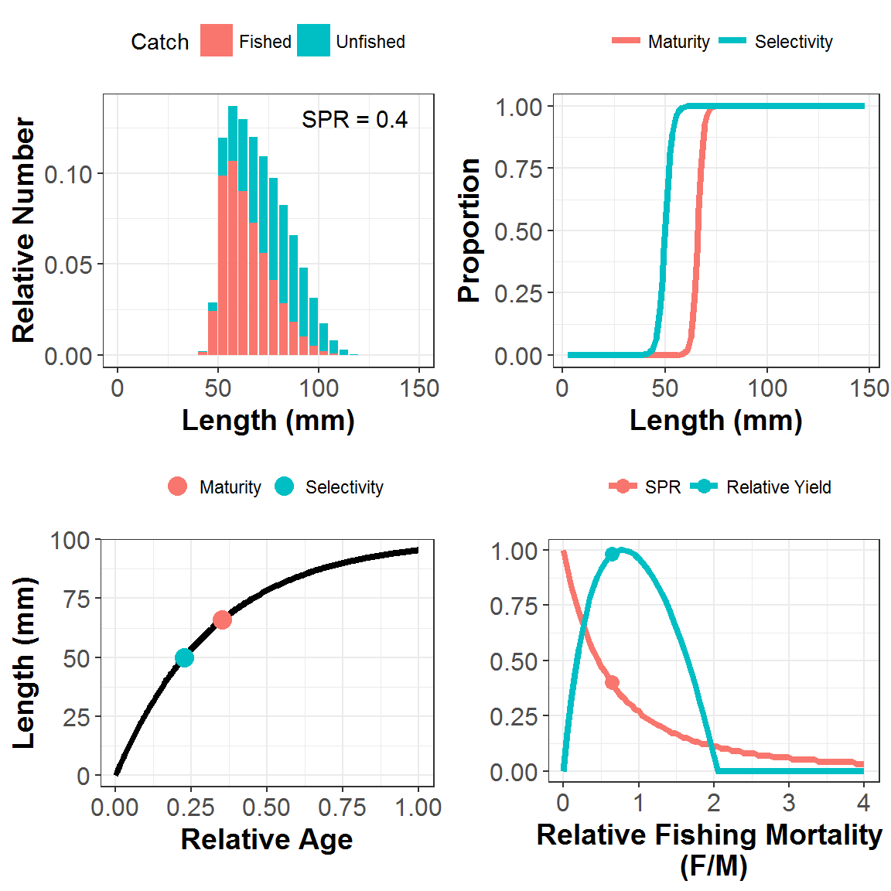
The maturity- and selectivity-at-length curves can also be plotted:
plotMat(MySim)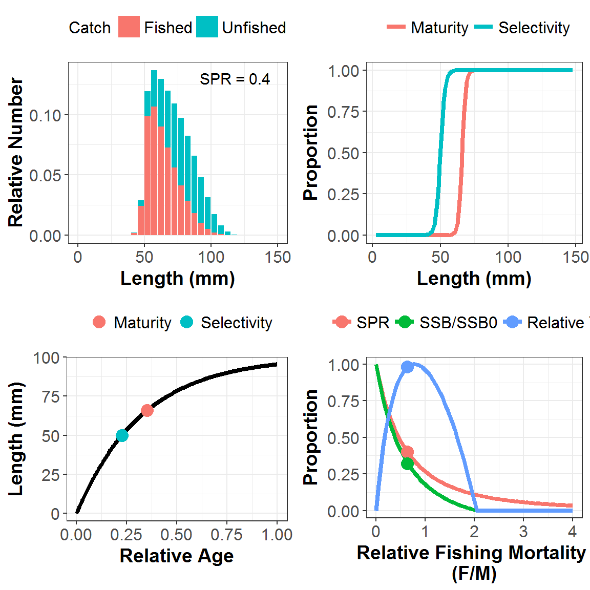
Still to Come
- Plots of yield per recruit and relative yield (if steepness of stock-recruitment relationship is known)
- Plots of von Bertlanffy growth curve, length-weight, etc
- Functions to calculate SPR and Yield at F
You can use a simple loop to produce a plot of SPR at different levels of F/M (or F if M is known). Below is an example for two different selectivity patterns:
FMVec <- seq(from=0, to=3, by=0.05)
SPROut <- matrix(NA, nrow=length(FMVec), ncol=2)
MyPars@Linf <- 100
MyPars@MK <- 1.5
MyPars@L50 <- 50
MyPars@L95 <- 55
MyPars@SPR <- numeric() # make sure SPR slot is empty
MyPars@BinMin <- 0
MyPars@BinMax <- 130
MyPars@BinWidth <- 5
for (ind in seq_along(FMVec)) {
MyPars@SL50 <- 50
MyPars@SL95 <- 55
MyPars@FM <- FMVec[ind]
SPROut[ind, 1] <- LBSPRsim(MyPars)@SPR
MyPars@SL50 <- 75
MyPars@SL95 <- 80
MyPars@FM <- FMVec[ind]
SPROut[ind, 2] <- LBSPRsim(MyPars)@SPR
}
plot(range(FMVec), c(0,1), xlab="F/M", ylab="SPR", bty="n", type="n")
lines(FMVec, SPROut[,1], lwd=2)
lines(FMVec, SPROut[,2], lwd=2, lty=2)
legend("topright", lty=1:2, lwd=2, title="Selectivity", legend=c("@Maturity", "Higher"), bty="n")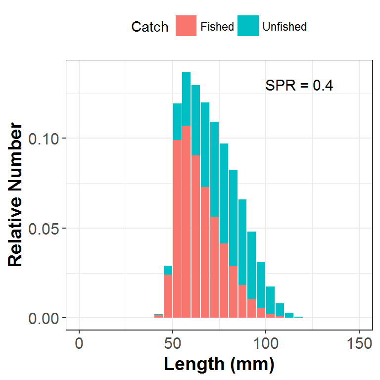
Fitting Empirical Length Data
Two objects are required to fit the LBSPR model to length data: LB_pars which contains the life-history parameters (described above) and LB_lengths, which contains the length frequency data.
Creating a LB_lengths object
A LB_lengths object can be created in two ways. The new function can be used to create an empty object which can be manually populated:
MyLengths <- new("LB_lengths")## File not found. A blank LB_lengths object createdslotNames(MyLengths)## [1] "LMids" "LData" "Years" "NYears" "Elog"However, it is probably easier to create the LB_lengths object by directly reading in a CSV file.
A number of CSV files containing example data have been included in the LBSPR package. To find the location of the data files on your machine, use the DataDir function:
datdir <- DataDir()The available example files can be printed out using list.files:
list.files(datdir, pattern=".csv")## [1] "LFreq_MultiYr.csv" "LFreq_MultiYrHead.csv" "LFreq_SingYr.csv"
## [4] "LFreq_SingYrHead.csv" "LRaw_MultiYr.csv" "LRaw_MultiYrHead.csv"
## [7] "LRaw_SingYr.csv" "LRaw_SingYrHead.csv"The length data can be either raw data, that is, individual length measurements, or length frequency data, where the first column of the data set must contain the mid-points of the length bins, and the remaining columns contain the counts for each length class.
The data type (freq or raw) must be specified in the call to the new function.
A valid LB_pars object must also be supplied to the new function.
Following the normal convention in R, if a header row is present in the data file, the argument header in the call to new must be set to TRUE.
Finally, the full file path must be supplied to the new function in order to read in the CSV file. If the file is not found, or the file argument is left empty, a blank LB_lengths object with be created.
Reading in Example CSV
A valid LB_pars object must be first created (see sections above):
MyPars <- new("LB_pars")## A blank LB_pars object created## Default values have been set for some parametersMyPars@Species <- "MySpecies"
MyPars@Linf <- 100
MyPars@L50 <- 66
MyPars@L95 <- 70
MyPars@MK <- 1.5 Note that only the life history parameters need to be specified for the estimation model. The exploitation parameters will be estimated.
A length frequency data set with multiple years:
Len1 <- new("LB_lengths", LB_pars=MyPars, file=paste0(datdir, "/LFreq_MultiYr.csv"), dataType="freq")A length frequency data set with multiple years and a header row (identical to Len1 data, but with a header row):
Len2 <- new("LB_lengths", LB_pars=MyPars, file=paste0(datdir, "/LFreq_MultiYrHead.csv"), dataType="freq", header=TRUE)A raw length data set with multiple years:
Len3 <- new("LB_lengths", LB_pars=MyPars, file=paste0(datdir, "/LRaw_MultiYr.csv"), dataType="raw")## Length bin parameters (BinMax) must be set for raw data. Using defaults## Length bin parameters (BinMin) must be set for raw data. Using defaults## Length bin parameters (BinWidth) must be set for raw data. Using defaultsNotice that for raw length measurements you must specify the parameters for the length bins (maximum, minimum, and width of length classes) in the LB_pars object. If these are left blank, default values are used.
Plotting Length Data
The plotSize function can be used to plot the imported length data. This is usually a good idea to do before proceeding with fitting the model, to confirm that everything has been read in correctly:
plotSize(Len1)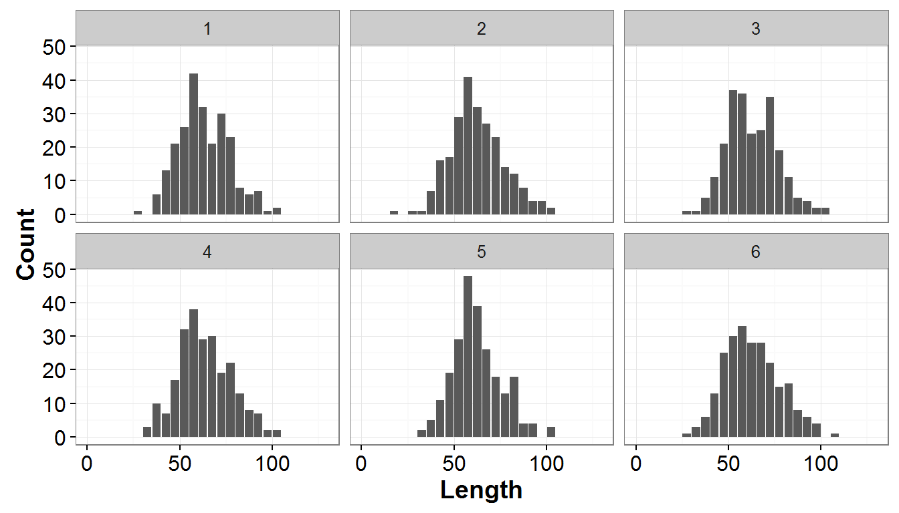
plotSize(Len2)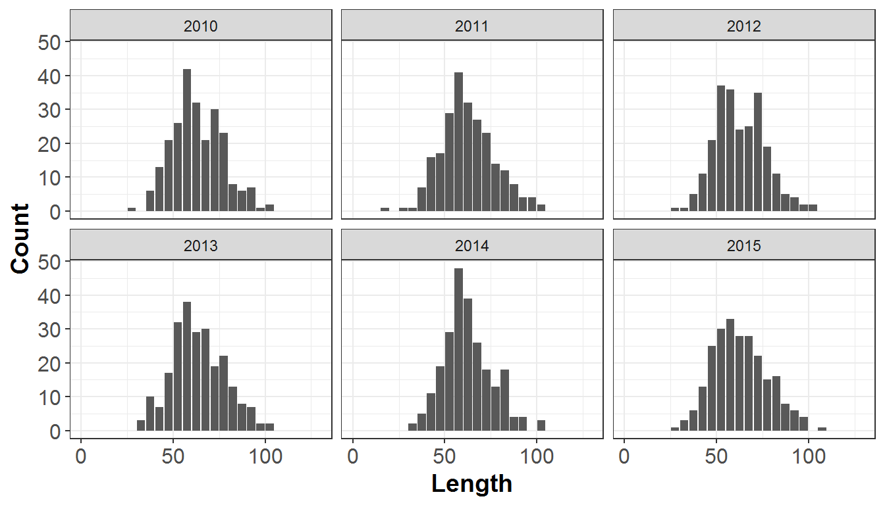
plotSize(Len3)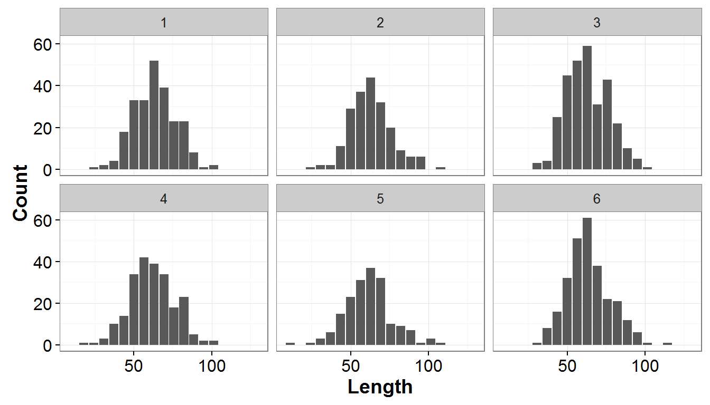
Fit the Model
The LBSPR model is fitted using the LBSPRfit function:
Note that the Control argument can be used to modify the additional parameters or LBSPR model type (see description in earlier section).
Examine and Plot Results
The LBSPR package uses a Kalman filter and the Rauch-Tung-Striebel smoother function (see FilterSmooth) to smooth out the multi-year estimates of SPR, F/M, and selectivity parameters.
The smoother parameter estimates can be accessed from the myFit object (which is an object of class LB_obj [see earlier section for details]):
myFit1@Ests## SL50 SL95 FM SPR
## [1,] 48.48227 62.45054 0.5391273 0.4471170
## [2,] 48.49150 62.50824 0.5389455 0.4480386
## [3,] 48.48337 62.40175 0.5384740 0.4493289
## [4,] 48.49369 62.42311 0.5369927 0.4519306
## [5,] 48.43434 62.25561 0.5417449 0.4508460
## [6,] 48.22890 62.00275 0.5257542 0.4594711myFit2@Ests## SL50 SL95 FM SPR
## [1,] 50.73096 66.64051 0.7032696 0.3977334
## [2,] 50.59793 66.39950 0.6970513 0.3993612
## [3,] 50.39604 66.21379 0.6843253 0.4033221
## [4,] 50.40019 66.51309 0.6844358 0.4031591
## [5,] 50.39663 66.58710 0.6799632 0.4050490
## [6,] 50.38433 66.38578 0.6709568 0.4089476Note that by default the smoothed estimates are used in the plotting routines.
The individual point estimates for each year can be accessed from the LB_obj object:
data.frame(rawSL50=myFit1@SL50, rawSL95=myFit1@SL95, rawFM=myFit1@FM, rawSPR=myFit1@SPR)## rawSL50 rawSL95 rawFM rawSPR
## 1 48.87476 62.49813 0.5463361 0.4423721
## 2 48.66520 64.15004 0.5418438 0.4443514
## 3 48.29876 61.12324 0.5485707 0.4362159
## 4 49.19038 64.31178 0.4746581 0.4887930
## 5 49.89528 63.10918 0.7491747 0.3537482
## 6 46.17451 59.47412 0.3658466 0.5457228The plotSize function can also be used to show the model fit to the data:
plotSize(myFit1)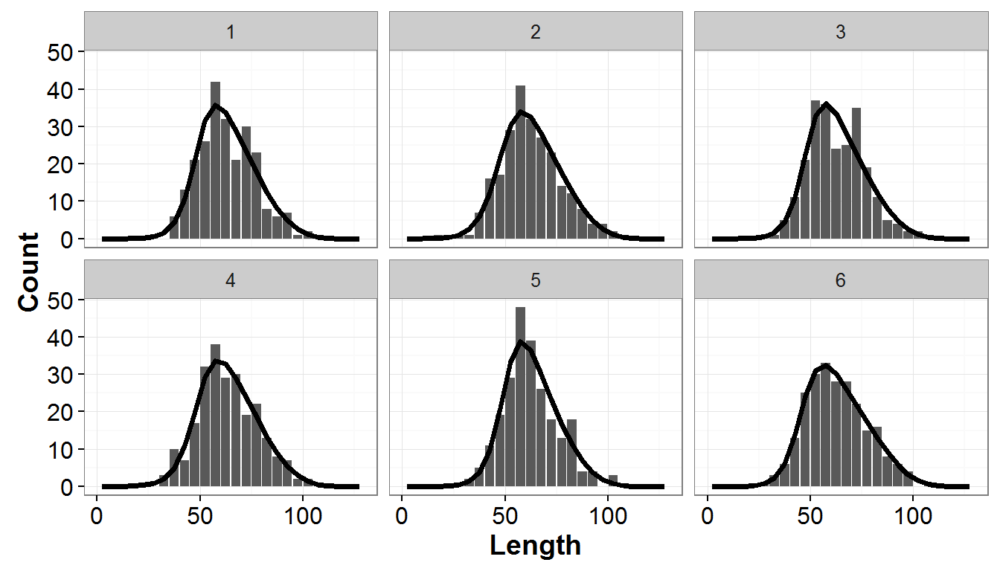
plotSize(myFit2)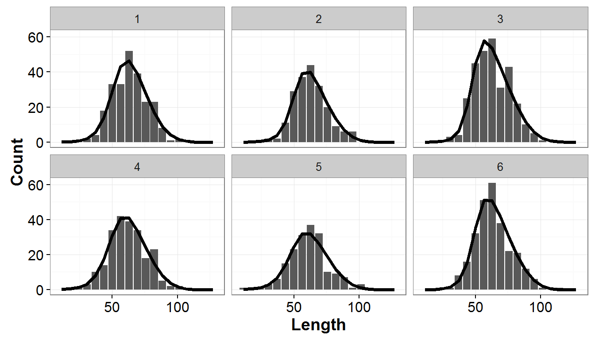
Similarly, the plotMat function can be used to show the specified maturity-at-length curve, and the estimated selectivity-at-length curve:
plotMat(myFit1)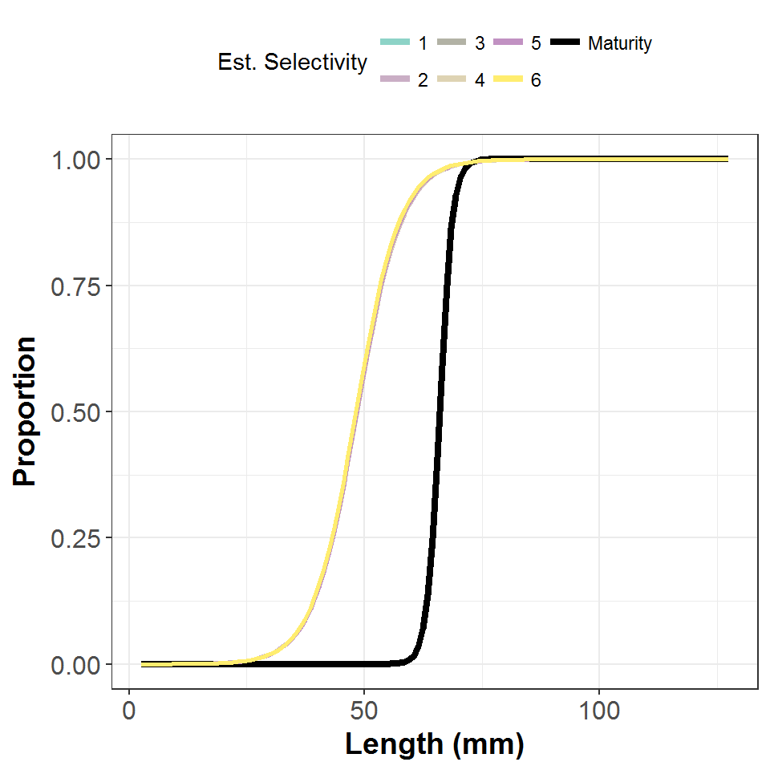
plotMat(myFit2)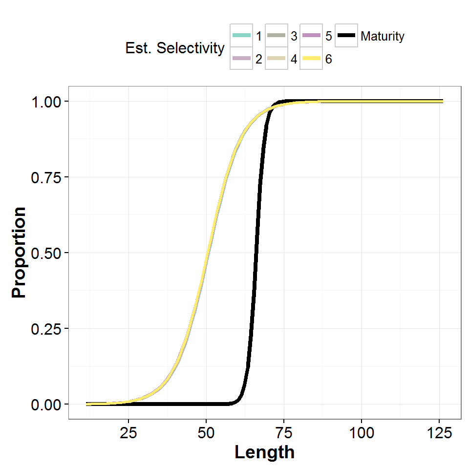
Finally, the plotEsts function can be used to visually display the estimated parameters. Note that this works for all data sets, but only makes sense when there are several years of data:
plotEsts(myFit1)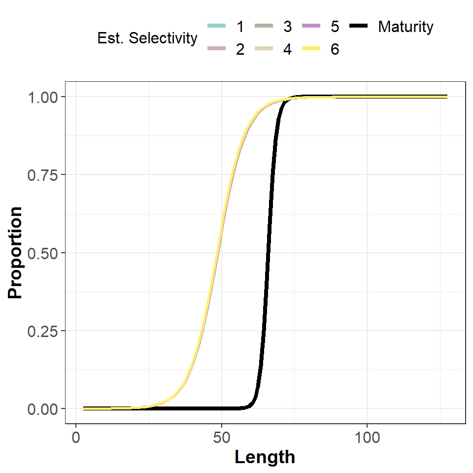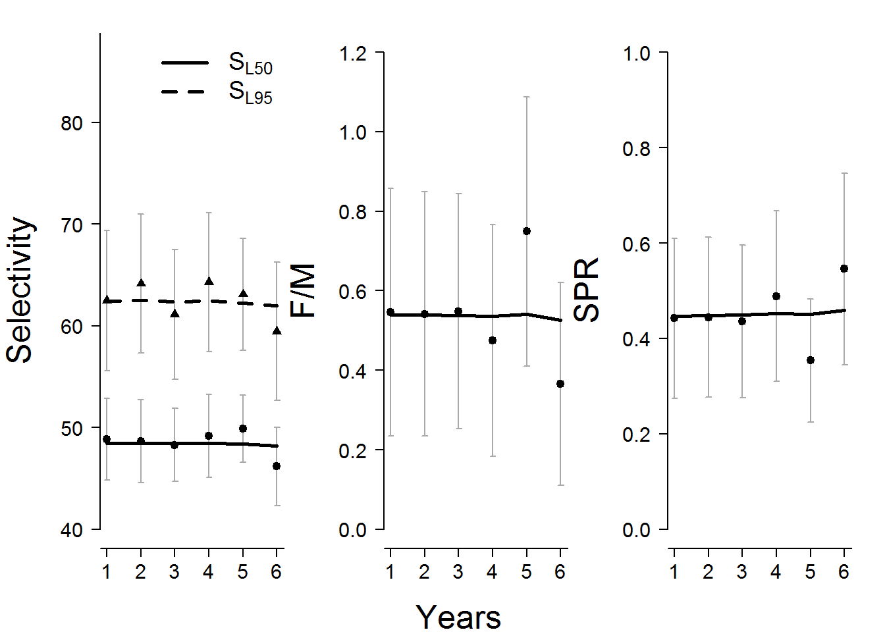
plotEsts(myFit2) 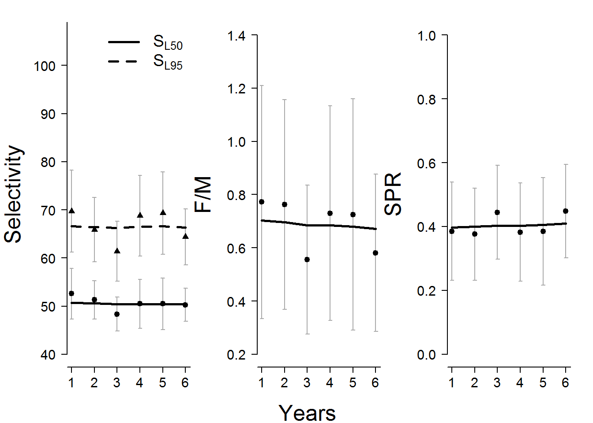
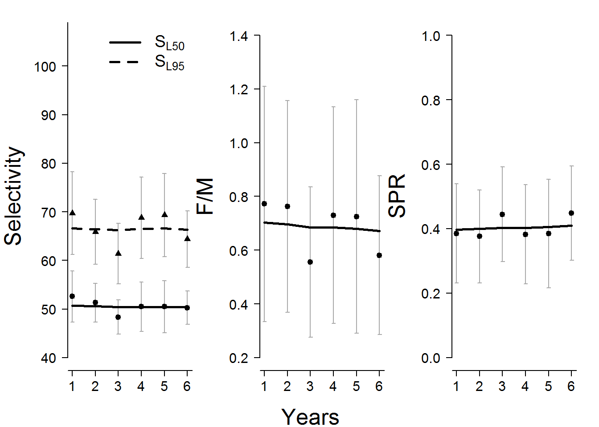
Comparing Observed Length Data to Target Size Structure
You can compare the observed size data against an expected size composition at a target SPR using the plotTarg function. To do this, you need a LB_pars object with the life history parameters and the target SPR:
MyPars <- new("LB_pars", msg=FALSE)
MyPars@Linf <- 100
MyPars@L50 <- 66
MyPars@L95 <- 70
MyPars@MK <- 1.5
MyPars@SPR <- 0.75 # Target SPR
MyPars@BinWidth <- 5Here we have set the target SPR at 75%.
Then import your length data:
LenDat <- new("LB_lengths", LB_pars=MyPars, file=paste0(datdir, "/LRaw_MultiYr.csv"), dataType="raw", msg=FALSE)Finally, you must set the selectivity parameters for the simulated size data. You may be able to estimate these from the data:
Mod <- LBSPRfit(MyPars, LenDat, msg=FALSE)
yr <- 1 # first year of data
MyPars@SL50 <- Mod@SL50[yr]
MyPars@SL95 <- Mod@SL95[yr]
plotTarg(MyPars, LenDat, yr=yr)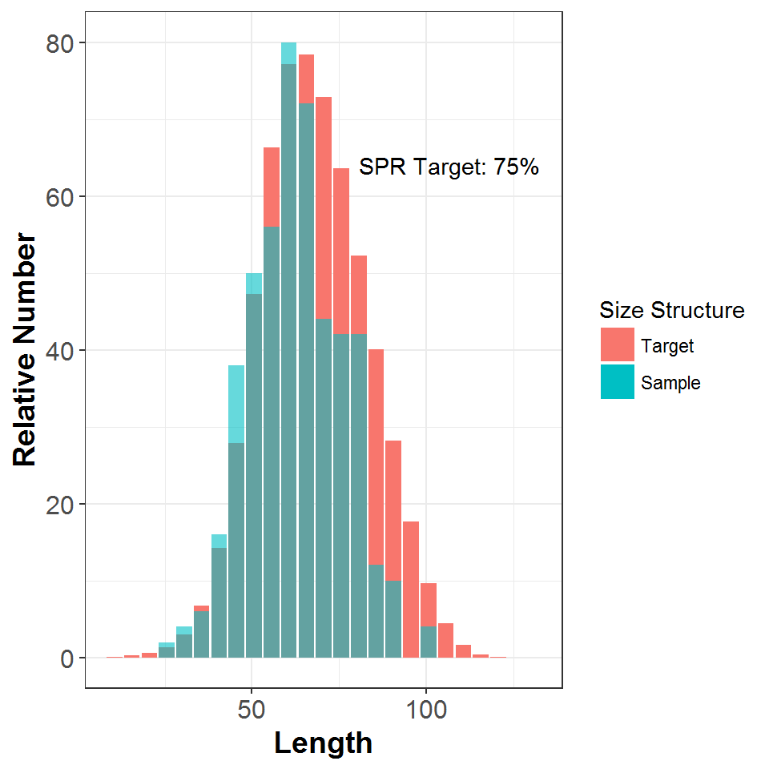
References
Hordyk, A.R., Ono, K., Sainsbury, K.J., Loneragan, N., and Prince, J.D. 2015a. Some explorations of the life history ratios to describe length composition, spawning-per-recruit, and the spawning potential ratio. ICES J. Mar. Sci. 72: 204–216.
Hordyk, A.R., Ono, K., Valencia, S.R., Loneragan, N.R., and Prince, J.D. 2015b. A novel length-based empirical estimation method of spawning potential ratio (SPR), and tests of its performance, for small-scale, data-poor fisheries. ICES J. Mar. Sci. 72: 217–231.
Hordyk, A.R., Loneragan, N.R., and Prince, J.D. 2015c. An evaluation of an iterative harvest strategy for data-poor fisheries using the length-based spawning potential ratio assessment methodology. Fish. Res. 171: 20–32.
Hordyk, A., Ono, K., Prince, J.D., and Walters, C.J. 2016. A simple length-structured model based on life history ratios and incorporating size-dependent selectivity: application to spawning potential ratios for data-poor stocks. Can. J. Fish. Aquat. Sci. 13: 1–13. doi: 10.1139/cjfas-2015-0422.
Prince, J.D., Hordyk, A.R., Valencia, S.R., Loneragan, N.R., and Sainsbury, K.J. 2015. Revisiting the concept of Beverton–Holt life-history invariants with the aim of informing data-poor fisheries assessment. ICES J. Mar. Sci. 72: 194–203.